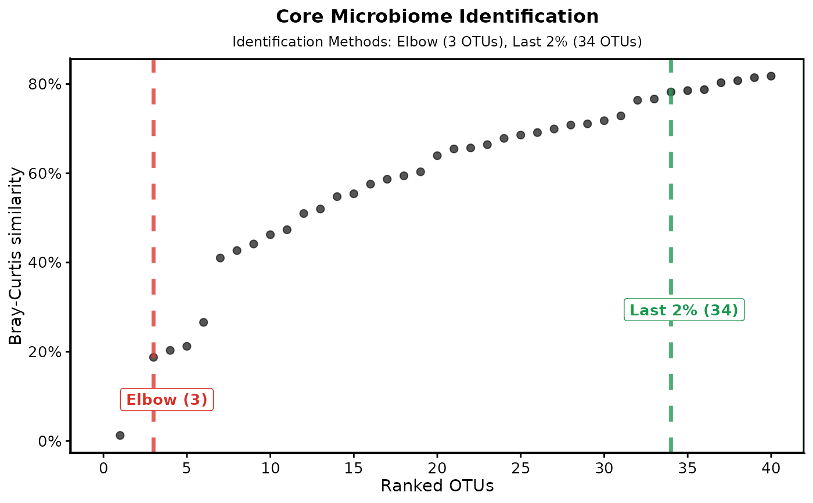

Plot Bray-Curtis increase over ranked OTU/ASVs
Source:R/plot_identified_core.R
plot_identified_core.RdVisualize the cumulative normalized mean Bray-Curtis increase returned by identify_core(), over ranked OTU/ASVs and shows cutoff points for elbow percent increase methods.
Usage
plot_identified_core(
bray_curtis_ranked,
elbow,
lastCall,
increase_value = 0.02,
dataset_name = NULL
)Arguments
- bray_curtis_ranked
A tibble as returned by
identify_core()$bray_curtis_ranked.- elbow
The number of OTU/ASVs identified by the elbow method (Integer).
- lastCall
The number of OTU/ASVs identified by the last percent Bray-Curtis increase method (Integer).
- increase_value
The percent increase value in decimal (e.g. 0.02) used for the Bray-Curtis increase method.
- dataset_name
Optional character string. When provided, it is prepended to the plot title (e.g.
"Switchgrass"). DefaultNULL(no prefix).
Value
A list containing: 1) df_for_plot, a data frame used for plotting, and 2) plot_identified_core, a ggplot object visualizing the Bray-Curtis increase with annotated cutoff points.
Details
The function converts rank to integers and zooms the x-axis to the first
1.2 * lastCall ranks. Label positions are computed dynamically from the
observed proportionBC range to avoid overlap.
Examples
# \donttest{
library(phyloseq)
library(BRCore)
# Example with the package switchgrass dataset
data("switchgrass", package = "BRCore")
# Identify core taxa
res <- identify_core(
physeq_obj = switchgrass,
priority_var = "sampling_date",
increase_value = 0.02,
seed = 48821
)
#> Seed used: 48821
#> ✔ Input phyloseq object is valid!
#> ℹ No `rarefied_list` provided. `physeq_obj` is already rarefied; wrapping as a single iteration.
#> ℹ No taxonomy found (or empty). Continuing without taxonomy.
#> ✔ Core prioritizing variable: sampling_date
#> ℹ Ranked by Rank only
#> ℹ Ranking OTUs based on BC dissimilarity, starting at 2026-04-26 05:53:24.64723
#> ■■■■■■■■■ 28% | ETA: 5s
#> ■■■■■■■■■■■■■■■■■■ 56% | ETA: 4s
#> ■■■■■■■■■■■■■■■■■■■■■■■■ 76% | ETA: 3s
#> ■■■■■■■■■■■■■■■■■■■■■■■■■■■■■■ 96% | ETA: 1s
#> ■■■■■■■■■■■■■■■■■■■■■■■■■■■■■■■ 100% | ETA: 0s
#> ✔ Elbow method identified 3 core OTUs
#> ✔ % increase method identified 34 core OTUs
#> ✔ Analysis complete!
# Plot using the returned curve and cut indices; label from increase_value
plot_identified_core(
bray_curtis_ranked = res$bray_curtis_ranked,
elbow = res$elbow,
lastCall = res$bc_increase,
increase_value = res$increase_value
)
#> $df_for_plot
#> # A tibble: 40 × 13
#> rank rank_num otu_added MeanBC proportionBC IncreaseBC elbow_slope_diffs
#> <fct> <int> <chr> <dbl> <dbl> <dbl> <dbl>
#> 1 1 1 OTU47 0.00638 0.0124 NA -0.000719
#> 2 2 2 OTU2 0.0469 0.0913 7.35 0.0196
#> 3 3 3 OTU6 0.0962 0.187 2.05 0.0294
#> 4 4 4 OTU21 0.104 0.203 1.08 0.0239
#> 5 5 5 OTU10 0.109 0.212 1.04 0.0199
#> 6 6 6 OTU7 0.136 0.266 1.25 0.0211
#> 7 7 7 OTU4 0.210 0.410 1.54 0.0287
#> 8 8 8 OTU430 0.219 0.427 1.04 0.0262
#> 9 9 9 OTU23 0.227 0.441 1.03 0.0241
#> 10 10 10 OTU18 0.237 0.462 1.05 0.0227
#> # ℹ 30 more rows
#> # ℹ 6 more variables: delta_pct_max_BC <dbl>, is_BC_core <lgl>,
#> # last_pctBC_cutoff <lgl>, is_elbow_core <lgl>, last_elbow_cutoff <lgl>,
#> # rank_fac <fct>
#>
#> $plot_identified_core

#>
# }